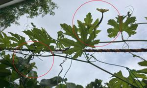

うるがいの話 ある日
最新: 工工四について【うるがいの話 ある日】とは 一日だけのプログです
『うるがいの話』の最新一日だけのプログで、通信料が少なく経済的だ。カニの画像をクリックすると全ての日付が載る『うるがいの話』サイトを表示します
|
|
【うるがいの話】 うるがい(ｳﾙｶﾞｲ urugai)とは、『もずくがに』の名前でとても大きくなります。 |
|---|---|
|
|
【カミマヤーの話】 猫のことを方言でマヤーといいます。カミマヤー（kamimayaa）とは、神の猫のことです。 |
|
【たながぁの音楽】 たながぁ（ﾀﾅｶﾞｰ tanagaa）とは手長えびのことで、何種類かあり大きいのは車 エビぐらいになります。 |

|
【ぶながぁの話】 ぶながぁ(ﾌﾞﾅｶﾞｰ bunagaa)とは、赤い髪の毛、赤い身体、そして身長は１ｍ２０ｃｍ ぐらい、川の蟹を食べているの目撃された。場所は沖縄県国頭郡大宜味村のと ある村僕の隣近所に住んでいる爺さんから、聞いた話です。 |
|
|
【ギーマの話】 ギーマ(giima)とは、山原の里山に咲くスズランに似た、 花を付けます。実は食べられます、 気が付くと口の周りが紫になっています。 |
2024年05月18日 (土）工工四について
15:53
ゴヤーの実が二つなっている。

島太鼓のＤＴＭに挑戦するため、三線の本を図書館から探す。ほとんどの本
は、工工四なのである。圧倒的、なんでかな？と弦の押さえ方を羅列してだ
けなので単純である、実際に弾くときはテンポやメロディーなんか分かって
いるので楽譜なんかいらない。ん、確かに。だから、ユーチューブ動画でも
『ヒヤミカチ節の動く工工四をつくりました！』なんてものがある。おそろ
らく、動画で工工四と、勘所が分かる枠を演奏に合わせ、枠の画像を動画で
作成しているのだろうが、かなりの労力をかけて作成していると思われる。
もしかして、楽譜ソフトみたいなものを作っているとか・・・、それはあり
得ないと思うが。
そこで、考えたやはり動画と一緒に、工工四のＰＤＦをおまけにダウンロー
ドできるようと、その筋の人は考えた。
１．工工四作成手順
ステップ1.楽譜ソフトMuseScoreから,楽譜をmidiへエキスポート
ステップ2.MuseScoreのmidiを、楽譜ソフトTuxGuitarでインポート
ステップ3.楽譜ソフトTuxGuitarから、エキスポートASCII
ステップ4.エキスポートASCII（楽譜データ）を真珠プログラムで、工工四へ展開
ステップ5.真珠プログラムの工工四データを、Excelで清書、PDFで保存
ついでに、
２．工工四から、楽譜ソフトMuseScoreへの展開は
ステップ1.紙の工工四を,グーグルでOCRデータへ展開
ステップ2.工工四のOCRデータから、真珠プログラムで
テキスト音楽「サクラ」』の楽譜データへ展開
ステップ3.テキスト音楽「サクラ」』でmidiへエキスポート
ステップ4.楽譜ソフトMuseScoreで、テキスト音楽「サクラ」』でmidiを読み込む
年内を目標とする。できたら、凄いなと思う。
１５時３１分 ビットコインの総資産 ￥３０、１３１（↑２７４）